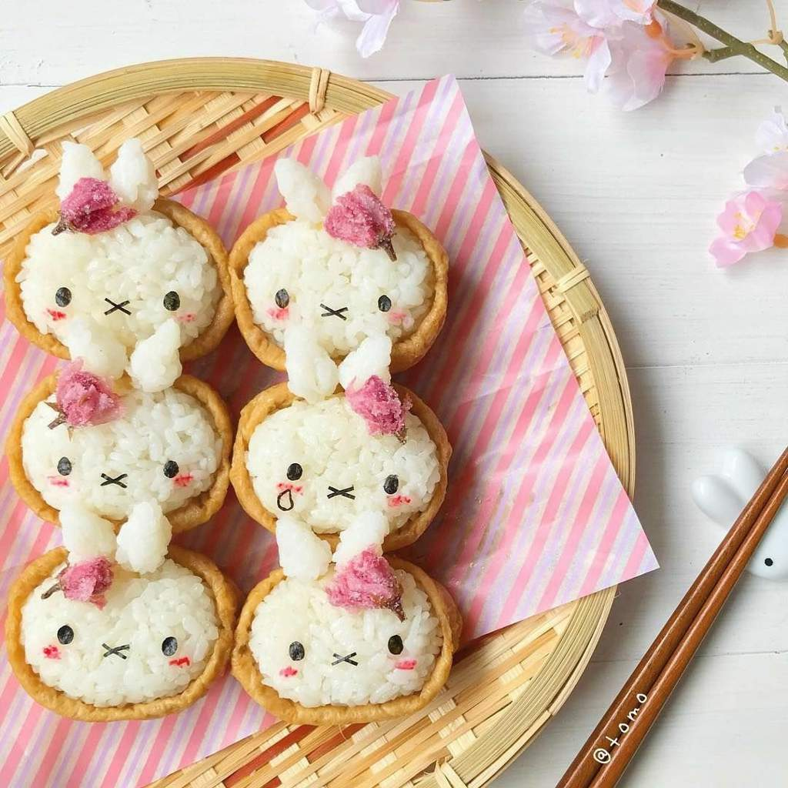

🐰 Conejitos Kawaii
Descubre los lugares más adorables donde habitan los conejitos más tiernos del mundo. Desde los campos floridos de Holanda hasta los santuarios de conejos en Japón, experimenta la ternura en su máxima expresión. Estos pequeños amigos peludos te robarán el corazón con sus saltitos juguetones y sus caritas dulces. ¡Una experiencia que despertará tu lado más tierno!